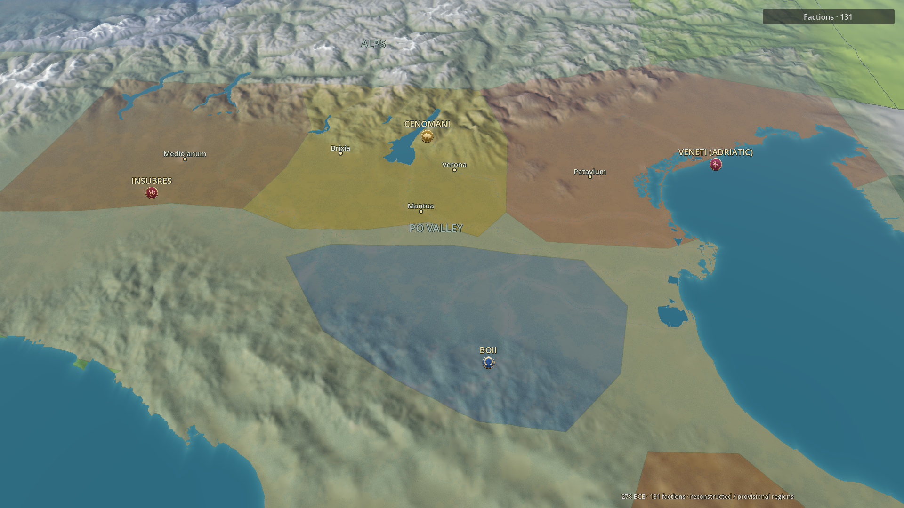
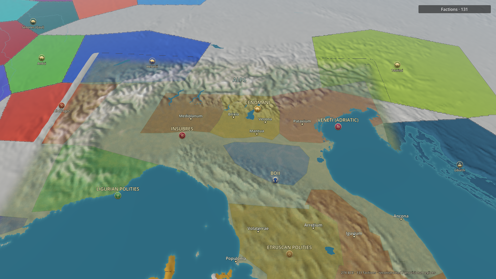
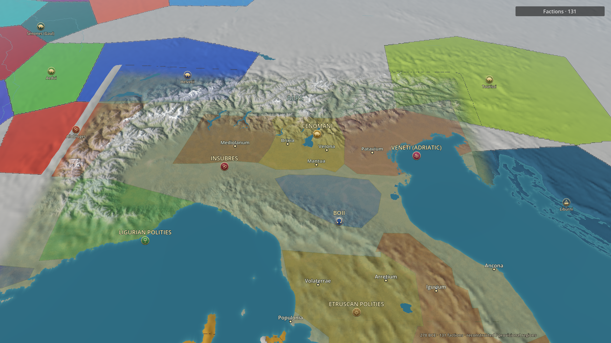
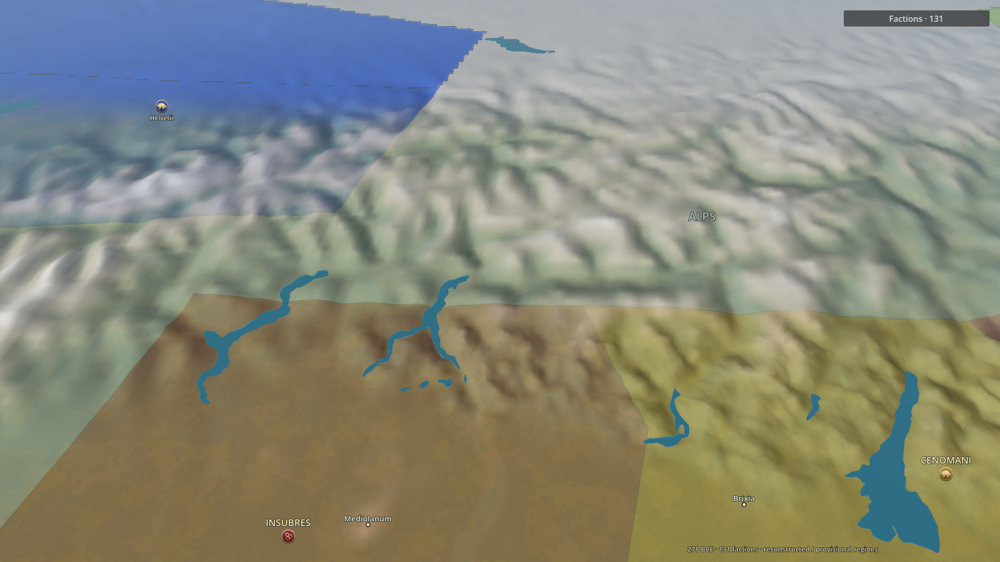
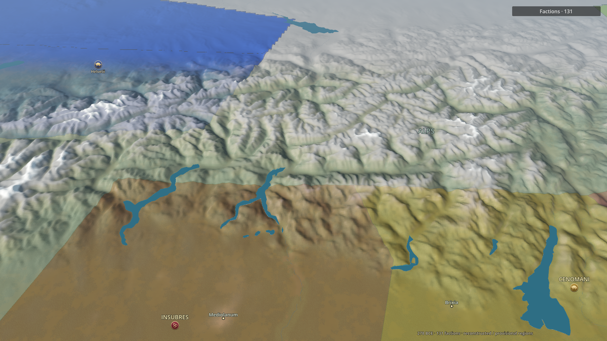
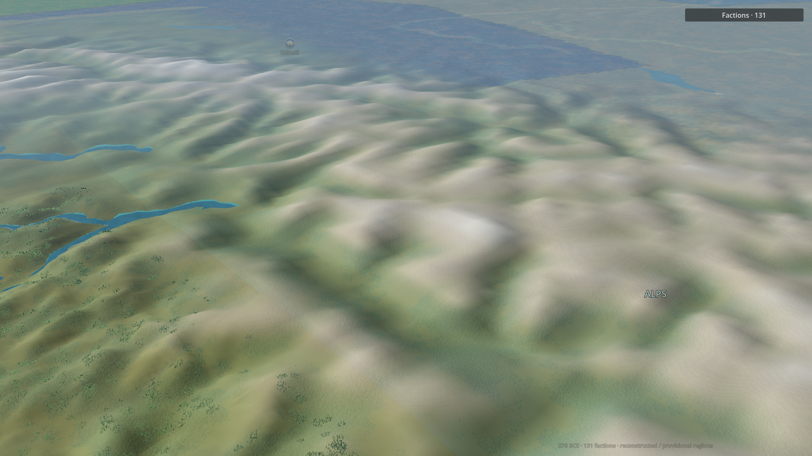
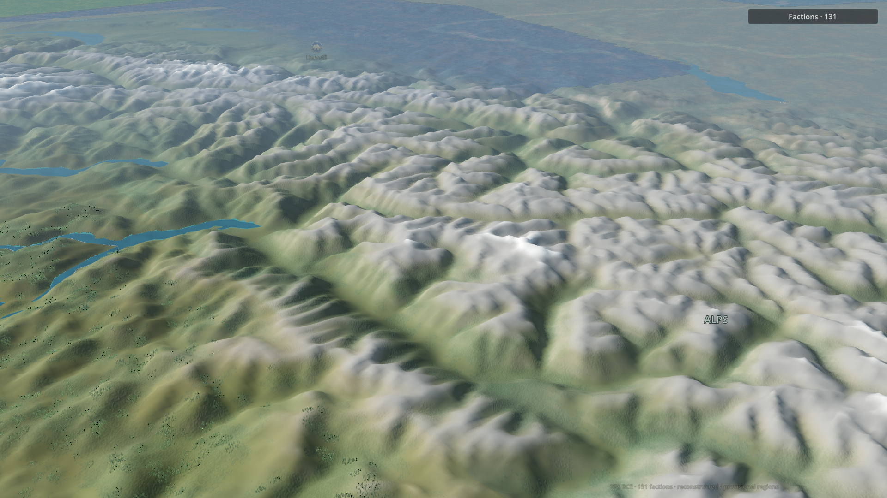

Measured Copernicus heights fill the crest coverage gap. Denser near terrain, bare high rock and altitude/aspect snow improve the Alpine arc while retaining green valleys. No procedural peaks, ownership edits or settlement-coordinate changes. Snow/firn is an illustrative static high-elevation surface, not a mapped 278 BCE glacier extent or seasonal simulation.
Findings, evidence and limitations · Camera and source-preservation checks









Remaining: approximately 650–870 m output still smooths individual summits and rock faces; inherited political envelope seams remain; glacier outlines and 278 BCE snowline are not established by this physical dataset.